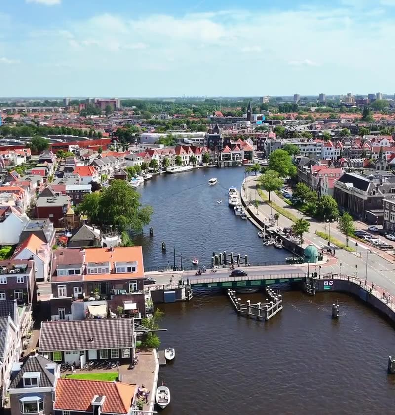

Helder in gebruik.
Sterk in gevoel.
Een website, webshop of applicatie moet vanzelfsprekend voelen. Wij vertalen complexe vragen naar heldere interfaces die werken voor je gebruikers én je organisatie.


Goed ontwerp begint
met begrijpen.
Wat willen mensen doen? Waar lopen ze vast? Die vragen stellen we vóór we het eerste scherm tekenen. Of je nu iets nieuws maakt of je bestaande platform wilt verbeteren.
Vinden zonder te zoeken
De informatie is er, maar mensen vinden haar niet. Wat verwachten ze en waar raken ze de weg kwijt?
Complex voelt eenvoudig
Mensen haken af bij een formulier of lopen vast in een dashboard. Welke stap is onduidelijk en wat helpt hen verder?
Een ervaring die klopt
Op mobiel voelt een vertrouwde taak ineens lastig, of je product past niet meer bij je merk. Waar klopt de ervaring niet meer?
UX & UI design.
Van eerste vraag tot laatste detail.
Als UX & UI designbureau verbinden we onderzoek, interactieontwerp en visueel ontwerp. Afhankelijk van de scope ontvang je een getoetst prototype, responsive schermontwerpen en herbruikbare componenten voor de bouw.

UX design. Logisch in gebruik
Een website kan er goed uitzien. Maar vinden mensen wat ze zoeken en lukt het om iets te regelen? Daar draait User Experience (UX) design om. We onderzoeken wat gebruikers nodig hebben en ontwerpen de structuur, navigatie en stappen die hen verder helpen. We toetsen wat werkt en verbeteren wat nog schuurt.
UI design. Eigen in uitstraling
User Interface (UI) design maakt die ervaring zichtbaar en herkenbaar. Denk aan de knoppen, kleuren, typografie en schermen waarmee mensen werken. We ontwerpen een eigen visuele stijl die past bij jouw merk en duidelijk maakt wat je kunt doen. Mooi én prettig in gebruik, op ieder scherm.
Waar kan het beter?
Ontdek waar gebruikers vastlopen op je website of applicatie. Met een UX Quickscan brengen we je verbeterkansen in beeld.
Vraag een UX Quickscan aanZo ziet helderheid eruit.
Diabetesvereniging Nederland
Veel informatie toegankelijk maken voor mensen met diabetes. Een heldere structuur voor een platform dat bezoekers verder helpt.

CMO STAMM
Een contentrijke website voor een kennisorganisatie. Met aandacht voor navigatie, leesbaarheid en toegang tot maatschappelijke kennis.
Eerst begrijpen.
Dan maken.
Je werkt direct met de ontwerpers. We spreken af wanneer we samen meekijken, betrekken je bij de keuzes en toetsen wat werkt. Zonder tussenlagen.
Onderzoek & richting
We verdiepen ons in je doelen, gebruikers en de bestaande ervaring. Onderzoek, gesprekken en een UX-audit maken duidelijk waar ontwerp het verschil kan maken.
Structuur & prototypes
We maken gebruikersflows en klikbare prototypes. AI bespaart veel uitwerktijd, zodat we ideeën eerder samen kunnen toetsen, vóór de bouw. Wij maken de ontwerpkeuzes en bewaken de kwaliteit.
UI design & samenhang
Het visuele ontwerp blijft handwerk, passend bij jouw merk en gebruikers. We brengen typografie, kleur en interactie samen in herbruikbare componenten, met oog voor toegankelijkheid en ieder scherm.
Testen, verfijnen & overdragen
We toetsen het ontwerp, scherpen details aan en maken het klaar voor ontwikkeling. Onze developers kunnen het bouwen, of we werken samen met jouw bestaande team.
Je spreekt de mensen
die het maken.
Je werkt rechtstreeks met Jeroen en Jeroen. We denken mee, ontwerpen en stemmen af met development. Van de eerste vraag tot de laatste ontwerpkeuze.
Maak kennis met EyeeNaast een mooi eindresultaat is het ook nog eens heel gezellig om samen te werken met Jeroen & Jeroen.
Rianne SchoutenDiabetesvereniging Nederland


Een paar heldere antwoorden.
Hoe gebruiken jullie AI bij UX & UI design?
We gebruiken AI om sneller prototypes te maken en ideeën eerder tastbaar te maken. Zo kunnen we interacties verkennen en keuzes eerder met je bespreken. We houden altijd de regie: wij maken de ontwerpkeuzes, beoordelen de uitwerking en toetsen of de ervaring past bij je gebruikers en doelen.
Is het UI-design uniek voor onze organisatie?
Ja. Het UI-design is handwerk, afgestemd op jouw merk, inhoud en gebruikers. AI kan het prototypen versnellen, maar vervangt onze ontwerpblik niet. We ontwerpen zelf de visuele stijl, componenten en interacties, zodat het resultaat een samenhangend en eigen product is.
Wat is het verschil tussen UX en UI?
UX gaat over hoe mensen je product ervaren: de structuur, interacties en stappen die ze doorlopen. UI maakt die ervaring zichtbaar met typografie, kleur en componenten. We ontwerpen ze in samenhang, zodat het geheel klopt.
Kunnen jullie een bestaande website of applicatie verbeteren?
Ja. We bekijken wat al goed werkt en waar mensen drempels ervaren. Een UX Quickscan kan helpen om te bepalen welke verbeteringen als eerste aandacht verdienen.
Kunnen jullie het ontwerp ook ontwikkelen?
Ja. Onze ontwerpers en developers werken nauw samen. We kunnen het ontwerp en de componenten ook overdragen aan je eigen ontwikkelteam.
Wat kost een UX & UI-traject?
De kosten hangen af van de gebruikersflows, schermtypen en complexiteit van interacties, en van het benodigde onderzoek en de gebruikstesten. Een bestaande flow verbeteren vraagt iets anders dan een nieuw platform ontwerpen. We stemmen vooraf de scope en oplevering af en maken daarvoor een passend voorstel.
Hoe lang duurt een UX & UI-traject?
Dat hangt af van de scope, het onderzoek, de gebruikstesten en de beschikbaarheid voor feedback. Bij de start spreken we een realistische planning af, inclusief de momenten waarop we jouw input nodig hebben. Waar dat past, delen we het werk op in fases met een overzichtelijke eerste stap.
Wat hebben jullie van ons team nodig?
Jullie kennis van de organisatie, gebruikers en het huidige product is ons vertrekpunt. We spreken af wie meedenkt, feedback geeft en beslissingen neemt. Op afgesproken momenten bekijken we samen prototypes en ontwerpen. Je hoeft vooraf geen complete ontwerpbrief te schrijven.
Hoe nemen jullie digitale toegankelijkheid mee?
We houden in het ontwerp rekening met contrast, leesbare tekst, duidelijke interacties en toetsenbordbediening. Ook het testen van de uiteindelijke bouw is belangrijk: een ontwerp alleen garandeert nog geen toegankelijk product.